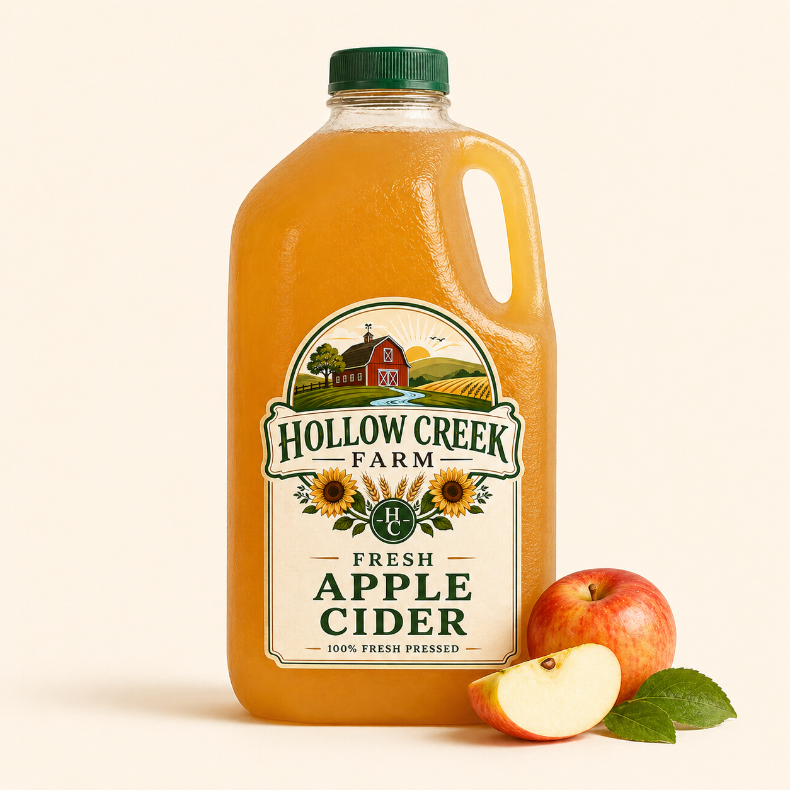
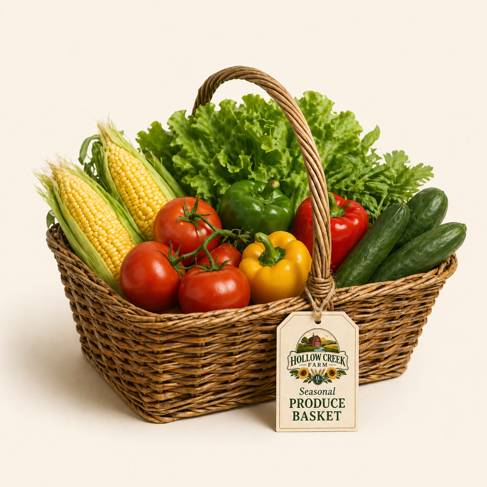
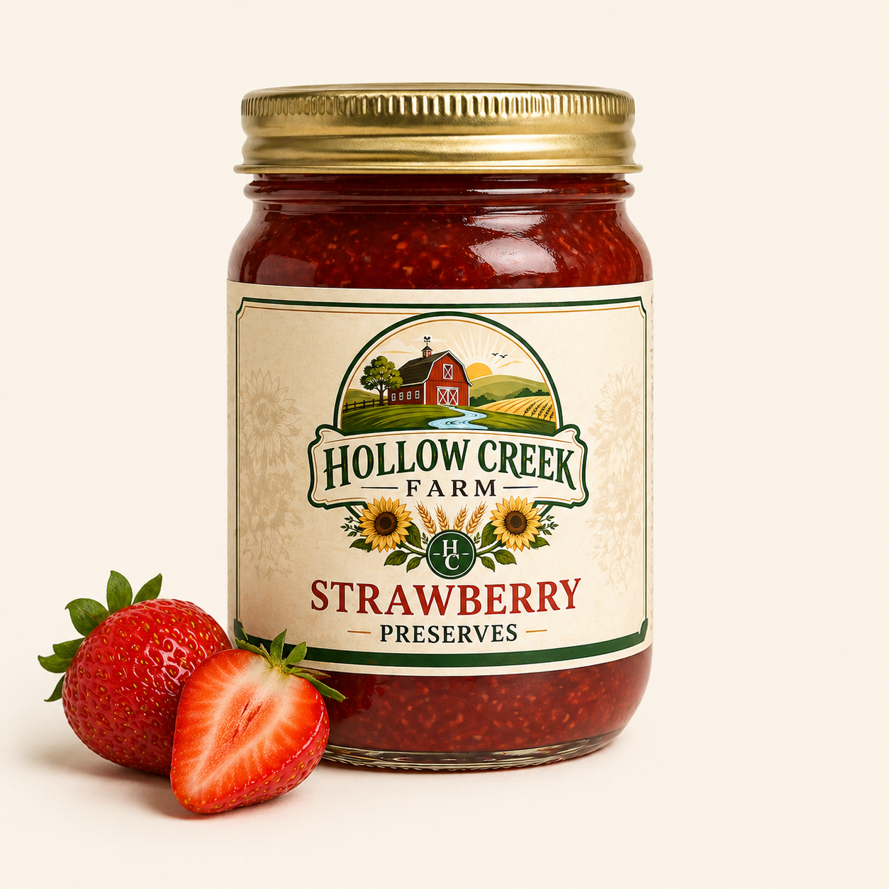

Shop Our Farm-Fresh Goods
Discover the bounty of our farm with our selection of fresh produce, artisanal products, and seasonal delights. From farm to table, we bring you the best of Hollow Creek Farm.
Apple Pie

Apple pie is a classic dessert made with a flaky crust and a filling of sweetened, spiced apples, often served with a scoop of vanilla ice cream for the perfect finishing touch.
$12.99
Blueberry Preserve

Our blueberry preserves are a delicious way to enjoy the sweet and tangy flavor of fresh blueberries, cooked down with sugar to create a thick, spreadable treat perfect for toast, pastries, or as a topping for desserts.
$8.99
Apple Cider

Our apple cider is a popular beverage, especially in the fall, made from pressed apples, often spiced and served warm or cold, and is a versatile base for many delicious recipes.
$6.99
Fresh Dozen Eggs

Our fresh dozen eggs are sourced from our happy hens, providing you with farm-fresh, high-quality eggs that are perfect for cooking and baking.
$5.99
Raw Honey

Our raw honey is pure, unheated, unpasteurized, and unfiltered honey taken directly from our local beehive.
$9.99
Seasonal Produce Basket

Savor the flavors of the season with our selection of seasonal delights, featuring limited-time offerings that celebrate the best of each season.
$14.99
Sourdough Bread

Our sourdough bread is made using a natural fermentation process that gives it a tangy flavor and a chewy texture, perfect for sandwiches or as a side to your meals.
$5.99
Strawberry Preserve

Indulge in our strawberry preserves, which are a rich, fruit-heavy spread featuring whole or large chunks of strawberries cooked in sugar syrup.